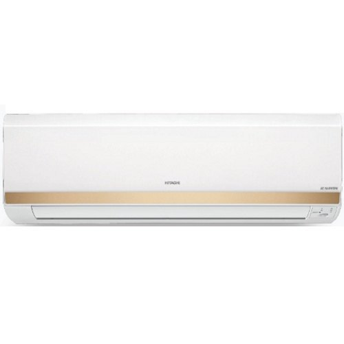
Inverter Split ACs
Hitachi Merai 3300S Inverter Split ACs
Price on request
Over 100 models across 7 categories, from bedroom splits to building-wide VRF and chiller plants. Prices change with season and stock, so ask for the latest quote.

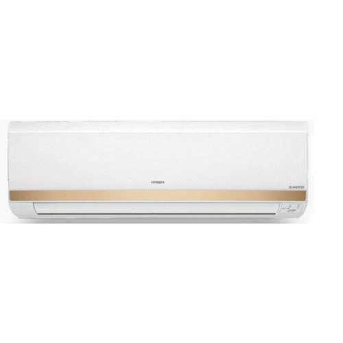
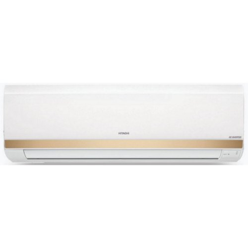


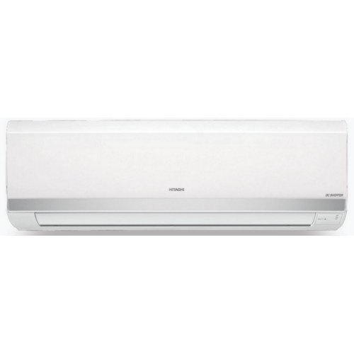
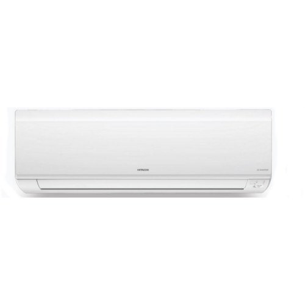

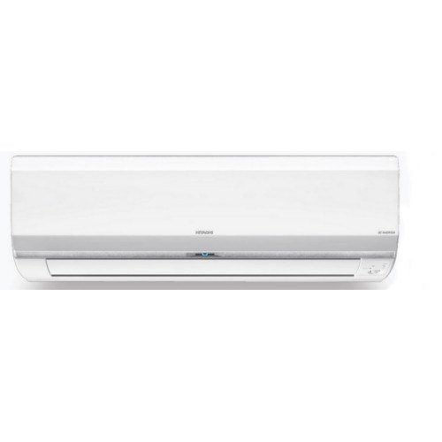
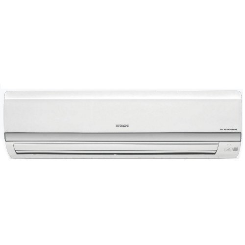
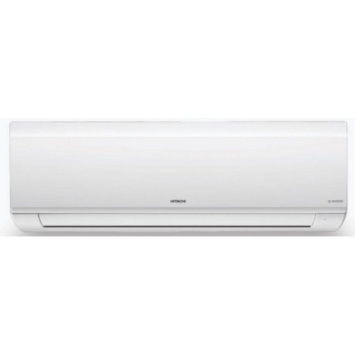


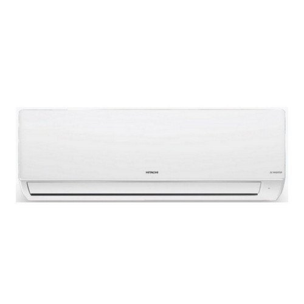
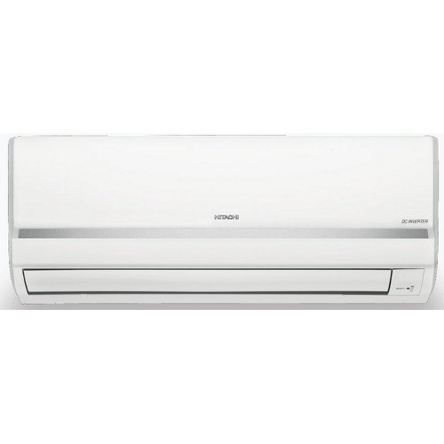
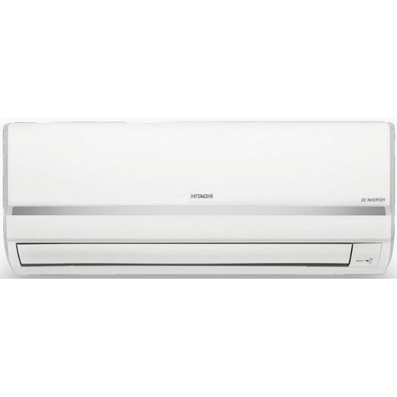
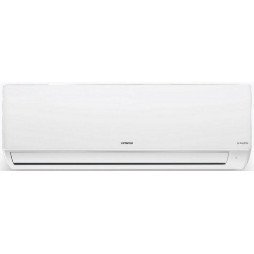
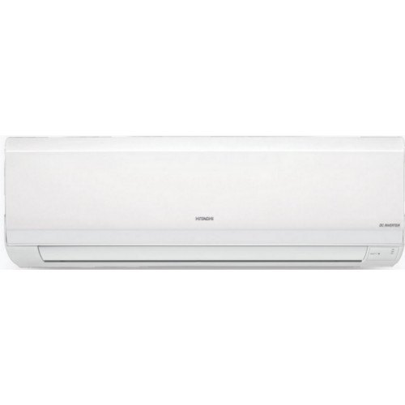


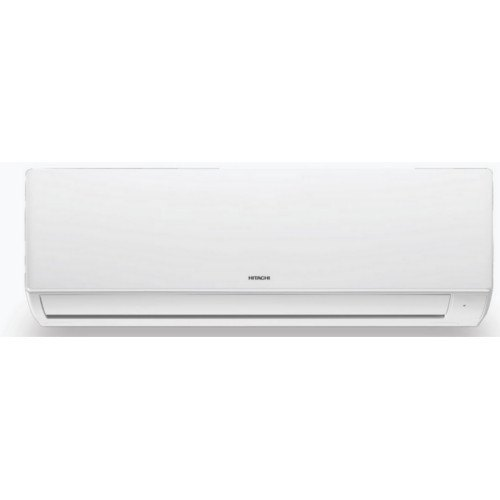

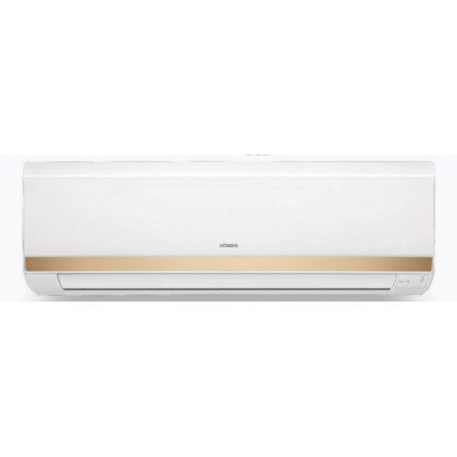

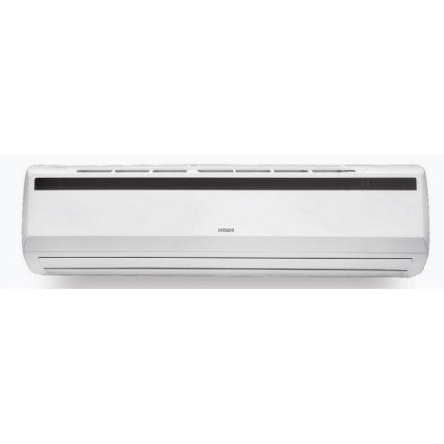
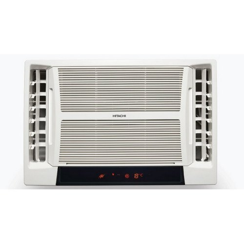

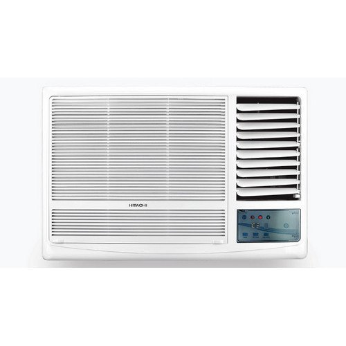


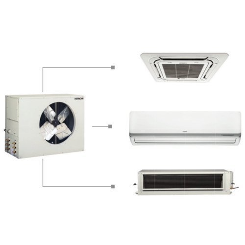

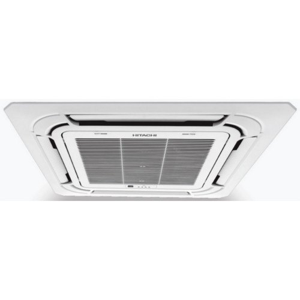


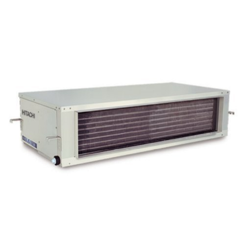


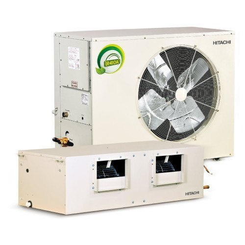


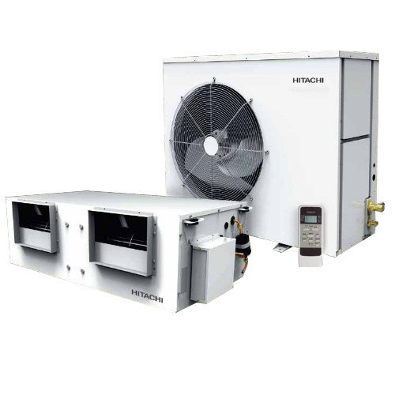


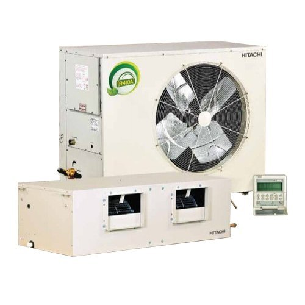
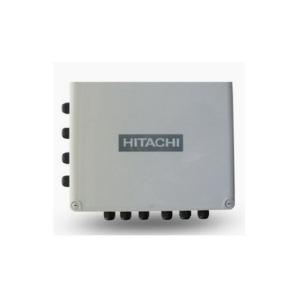
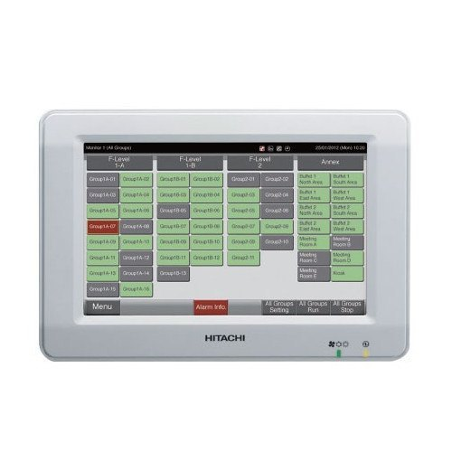
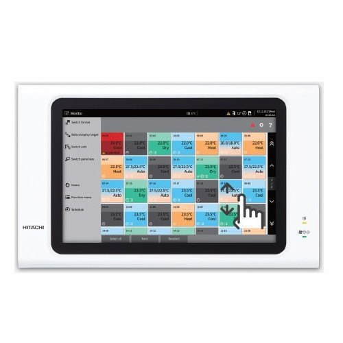
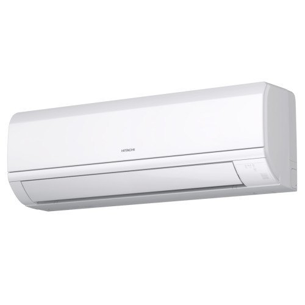


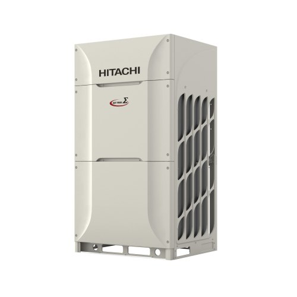


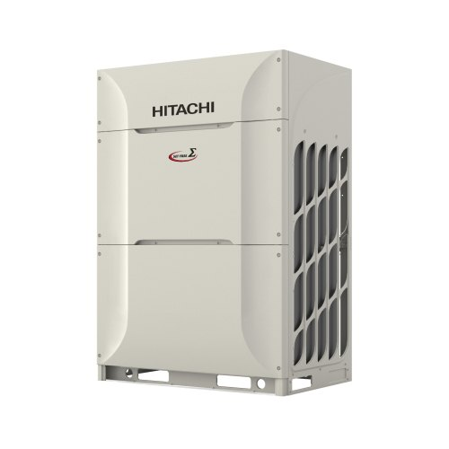

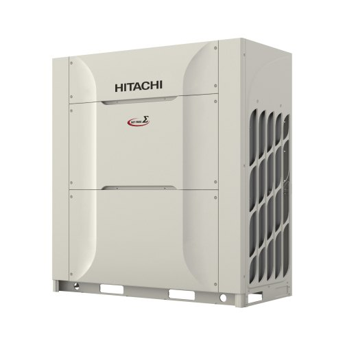

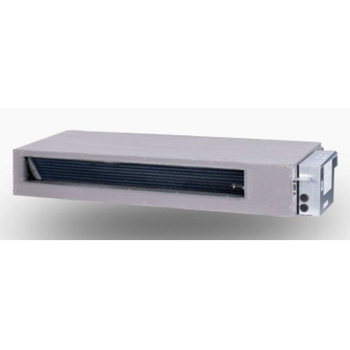
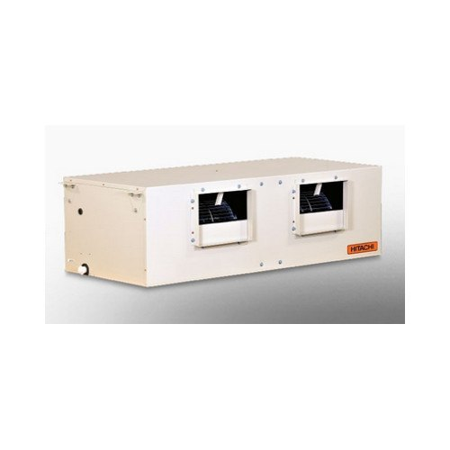
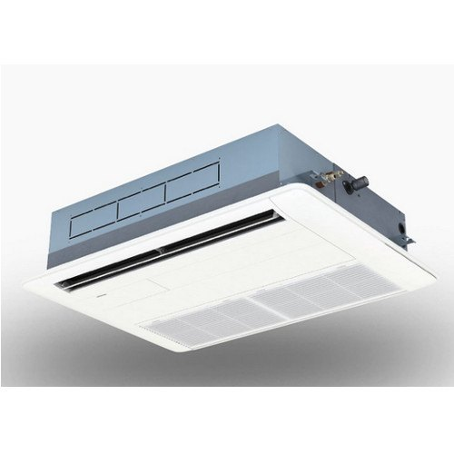
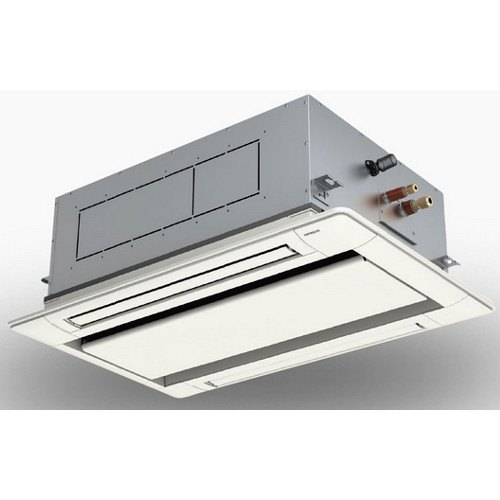
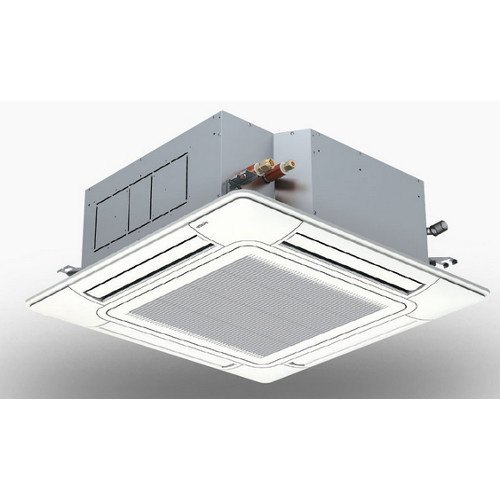
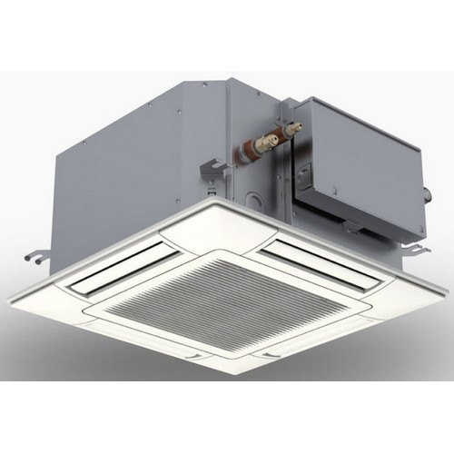
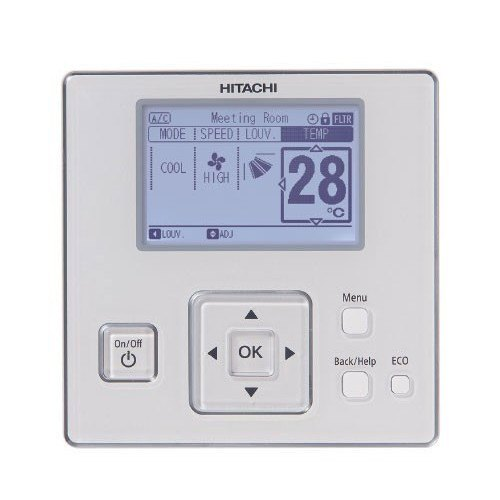
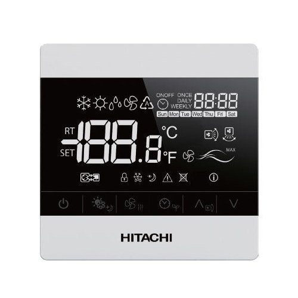
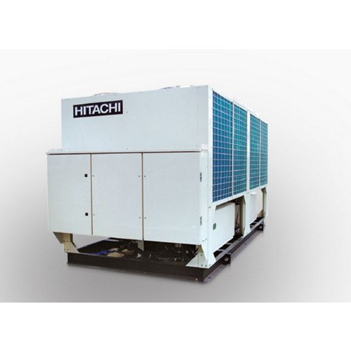
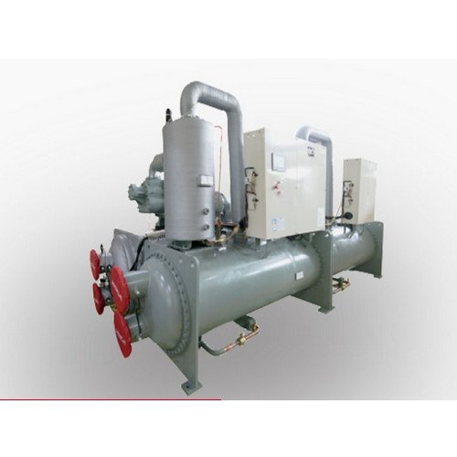
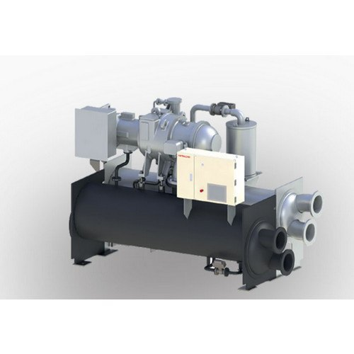
Try another model name, or ask us directly.
We stock and source the full current Hitachi line-up. Tell us what you need and we'll confirm availability and the best price.